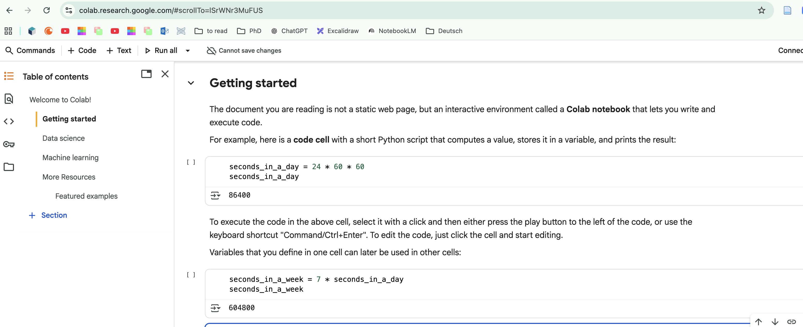
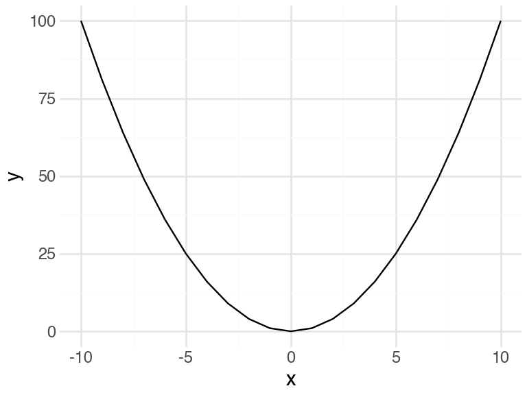

import numpy as np
a = 1
b = 1
c = -11 Python Basics for Data Science
This chapter provides a quick introduction to the programming language Python and common tools used for data analysis.
1.1 Python Environments
While you can run Python from a system terminal, for data analysis, it’s highly recommended to use an Integrated Development Environment (IDE) or a notebook environment. These tools provide features like code completion, debugging, and interactive data exploration.
Popular choices include:
- Google Colaboratory (Colab): A free, cloud-based Jupyter Notebook environment that requires no setup and runs entirely in the browser. It’s an excellent choice for beginners and for collaborative projects, as notebooks can be easily shared like Google Docs. It also provides free access to powerful hardware like GPUs, making it ideal for machine learning and data science tasks.
- Jupyter Notebook/JupyterLab: A web-based interactive environment that allows you to create documents containing live code, equations, visualizations, and narrative text. This format is excellent for exploratory data analysis and sharing results. It can be run on your local machine.
- Visual Studio Code (VS Code): A powerful, free code editor with excellent Python and Jupyter Notebook support through its extensions. It combines the features of a traditional IDE with the interactivity of notebooks, making it a great choice for projects that involve both scripting and data exploration.
These environments help organize your work by providing panes for writing scripts, an interactive console to execute code, a variable explorer to inspect objects, and areas to view plots and documentation.

1.2 First Steps With Python
This section is inspired by the book Introduction to Data Science by Rafael Irizarry, adapted for Python.
1.2.1 Objects
Suppose a high school student asks for help solving several quadratic equations of the form \(ax^2+bx+c = 0\). The quadratic formula gives us the solutions:
\[ \frac{-b \pm \sqrt{b^2 - 4ac}}{2a} \]
which change depending on the values of \(a\), \(b\), and \(c\). A key advantage of programming is that we can define variables and write expressions that solve these equations numerically. If we are asked to solve \(x^2 + x -1 = 0\), we first define our variables:
Here, we use = to assign values to variables. This stores the values for later use. Note that Python doesn’t print anything when we make this assignment, which means the objects were defined successfully.
To see the value stored in a variable, you can simply type its name in an interactive console or notebook cell, or use the print function:
a1A more explicit way is to use print():
print(a)1We use the term object to describe things stored in Python, such as variables, functions, and more complex data structures.
1.2.2 The Namespace
As we define objects, we are changing the current namespace. In an interactive environment like Jupyter or IPython, you can see the user-defined variables using the magic command %whos.
%whosVariable Type Data/Info
----------------------------------
a int 1
b int 1
c int -1
np module <module 'numpy' from '/Us<...>kages/numpy/__init__.py'>
ojs_define function <function ojs_define at 0x105edafc0>You should see a, b, and c. If you try to access a variable that hasn’t been defined, you’ll get an error. For example, typing x will result in a NameError.
Now that our variables are defined, we can use the quadratic formula to find the solutions: We have to import numpy module to use the sqrt function from it.
import numpy as np
solution_1 = (-b + np.sqrt(b**2 - 4*a*c)) / (2*a)
solution_2 = (-b - np.sqrt(b**2 - 4*a*c)) / (2*a)
print(solution_1)
print(solution_2)0.6180339887498949
-1.6180339887498951.2.3 Functions
Once you define variables, the data analysis process can usually be described as a series of functions applied to data. Python has many built-in functions, and countless more are available through external libraries like NumPy, Pandas, and Scikit-learn.
We already used print() and np.sqrt(). In general, we use parentheses to call a function. If you type a function’s name without parentheses, you’ll see a reference to the function object itself, not its result. There are many more prebuilt functions and even more can be added through packages. These functions do not appear in the workspace because you did not define them, but they are available for immediate use.
Most functions take one or more arguments. For example, the np.log() function calculates the natural logarithm of a number:
np.log(8)np.float64(2.0794415416798357)You can find out what a function does and what arguments it expects by using the built-in help() function or, in an interactive environment, by typing a question mark ? after the function name. The function round() returns the closest integer to a given number.
help(round)The help page shows that round() can take a second argument ndigits for the precision. Arguments can be passed by position or by name (keyword arguments).
round(3.1415, 2)3.14round(3.1415, ndigits=2)3.14When using keyword arguments, the order doesn’t matter:
round(ndigits=2, number=3.1415)3.14Arithmetic and relational operators (+, -, *, /, ^, ==, >) are also fundamental. Note that in Python, the power operator is **, not ^.
2**381.2.4 Variable Names
We’ve used a, b, and c, but variable names can be more descriptive. Python variable names must start with a letter or underscore, can contain numbers, but cannot contain spaces, and should not be variables that are predefined in Python. For example, don’t name one of your variables list by typing something like list = 2.
A common convention in Python is to use snake_case for variable names: use meaningful words, all lowercase, separated by underscores.
solution_1 = (-b + np.sqrt(b**2 - 4*a*c)) / (2*a)
solution_2 = (-b - np.sqrt(b**2 - 4*a*c)) / (2*a)For more advice, we highly recommend studying PEP8 style guide1.
1.2.5 Reproducible Analysis
One of the most powerful aspects of programming for data science is the ability to create reproducible analyses. This means that your work can be easily repeated, verified, and modified by yourself or others at any point in the future.
Writing Code That Runs Reliably
When working with notebooks or interactive environments, it’s crucial to write code that produces the same results every time it’s executed. Here are some key principles:
Execute cells in order: Always run your notebook cells from top to bottom in sequential order. Variables and functions defined in earlier cells are needed by later cells. If you jump around or skip cells, you might get unexpected errors or incorrect results.
Avoid state-dependent operations: Write code so that running a cell multiple times doesn’t break your analysis. For example:
# BAD: This will give different results each time you run it
x = 10
x = x + 1 # If you run this cell twice, x becomes 12, then 13, etc.
print(x)# GOOD: This always gives the same result
x = 10
y = x + 1 # No matter how many times you run this, y is always 11
print(y)The Power of Reusable Code
To solve another equation such as \(3x^2 + 2x -1\), we can copy and paste the code above and then redefine the variables and recompute the solution:
a = 3
b = 2
c = -1
solution_1 = (-b + np.sqrt(b**2 - 4*a*c)) / (2*a)
solution_2 = (-b - np.sqrt(b**2 - 4*a*c)) / (2*a)
print(solution_1, solution_2)0.3333333333333333 -1.0By creating and saving a script with the code above, we would not need to retype everything each time and, instead, simply change the variable names. Try writing the script above into an editor and notice how easy it is to change the variables and receive an answer.
1.2.6 Commenting Your Code
Any line in Python that starts with a hash symbol # is a comment and is not executed. Use comments to explain what your code is doing.
# Code to compute solution to a quadratic equation of the form ax^2 + bx + c
# Define the variables
a = 3
b = 2
c = -1
# Now compute the solution
solution_1 = (-b + np.sqrt(b**2 - 4*a*c)) / (2*a)
solution_2 = (-b - np.sqrt(b**2 - 4*a*c)) / (2*a)Longer comments, e.g., documentation, can be wrapped with triple quotes (““” or ’’’).
1.3 Data Types
Variables in Python can be of different types. For example, we need to distinguish numbers from character strings and tables from simple lists of numbers. The type() function helps determine an object’s type.
a = 2
type(a)intTo work efficiently, it’s important to understand Python’s basic data types.
1.3.1 Numbers
Python can handle integers (int) and floating-point numbers (float):
x = 7
y = 3.14
print(type(x))
print(type(y))<class 'int'>
<class 'float'>1.3.2 Strings
Text is represented as strings (str), written in quotes:
name = "Python"
print(type(name))<class 'str'>You can combine strings with the + operator:
greeting = "Hello " + name
print(greeting)Hello Python1.3.3 Lists
A list is an ordered, mutable collection of items, which can be of different types. You access elements using their zero-based index.
record2 = ["John Doe", 1234]
print(record2[0]) # Access the first element1.3.4 Dictionaries
A dictionary (dict) stores key-value pairs and is similar to a named list in R.
record = {
"name": "John Doe",
"student_id": 1234,
"grades": [95, 82, 91, 97, 93],
"final_grade": "A"
}This dictionary contains a string, an integer, a list of numbers, and another string.
print(record)
print(type(record))You access elements in a dictionary using their keys in square brackets:
record['student_id']1.3.5 Boolean
Another important data type is a boolean (bool), which can only be True or False. Relational operators like <, >, ==, <=, >= produce booleans.
z = 3 == 2
print(z)
print(type(z))False
<class 'bool'>Here the == is a relational operator asking if 3 is equal to 2. In Python, if you just use one =, you actually assign a variable, but if you use two == you test for equality.
1.3.6 DataFrames
The most common way to store a tabular dataset in Python is in a DataFrame, which is the primary data structure in the pandas library. A DataFrame is a two-dimensional table where rows represent observations and columns represent variables.
As an example, let’s use the tips dataset, which records restaurant bills and tips, along with information about the server, day, and time. The dataset is available directly through the Seaborn library.
import pandas as pd
import seaborn as sns
# Load the dataset
tips = sns.load_dataset("tips")We can check the object’s type to confirm that it’s a DataFrame:
type(tips)pandas.core.frame.DataFrameYou can quickly preview the first few rows of the data using the head() method:
tips.head()| total_bill | tip | sex | smoker | day | time | size | |
|---|---|---|---|---|---|---|---|
| 0 | 16.99 | 1.01 | Female | No | Sun | Dinner | 2 |
| 1 | 10.34 | 1.66 | Male | No | Sun | Dinner | 3 |
| 2 | 21.01 | 3.50 | Male | No | Sun | Dinner | 3 |
| 3 | 23.68 | 3.31 | Male | No | Sun | Dinner | 2 |
| 4 | 24.59 | 3.61 | Female | No | Sun | Dinner | 4 |
To access one of the columns, use its name in the access operator []
tips['time']0 Dinner
1 Dinner
2 Dinner
3 Dinner
4 Dinner
...
239 Dinner
240 Dinner
241 Dinner
242 Dinner
243 Dinner
Name: time, Length: 244, dtype: category
Categories (2, object): ['Lunch', 'Dinner']1.3.7 Categorical Data
In the tips dataset, several columns (like sex, smoker, day, and time) contain categorical data — values that fall into a small set of distinct groups rather than continuous numbers.
Pandas provides a special category data type that is more memory-efficient and allows you to store an explicit order for these categories.
import seaborn as sns
import pandas as pd
# Load example dataset
tips = sns.load_dataset('tips')
# Check which columns are categorical
tips.dtypestotal_bill float64
tip float64
sex category
smoker category
day category
time category
size int64
dtype: objectLet’s look at one categorical column — day (the day of the week the tip was recorded).
# Convert 'day' to category type
tips['day'] = tips['day'].astype('category')
tips['day'].dtypeCategoricalDtype(categories=['Thur', 'Fri', 'Sat', 'Sun'], ordered=False, categories_dtype=object)We can inspect the unique categories using the .cat.categories accessor:
tips['day'].cat.categoriesIndex(['Thur', 'Fri', 'Sat', 'Sun'], dtype='object')By default, categories have no particular order. But we can reorder them to reflect the natural order of the week.
# Define a meaningful order for the days
ordered_days = ['Thur', 'Fri', 'Sat', 'Sun']
# Re-categorize 'day' with an explicit order
tips['day'] = pd.Categorical(tips['day'],
categories=ordered_days,
ordered=True)
# Check the new order
tips['day'].cat.categoriesIndex(['Thur', 'Fri', 'Sat', 'Sun'], dtype='object')1.3.8 NumPy Arrays
NumPy arrays are the fundamental object for numerical computing in Python. They are list-like or grid-like structures where all elements must be of the same type. While pandas DataFrames are great for heterogeneous, labeled data, NumPy arrays are optimized for homogeneous, numerical array operations. Many pandas operations use NumPy arrays under the hood. Vectorized operations on NumPy arrays are significantly faster than native Python loops due to highly optimized implementation.
We can create a NumPy array (often called a matrix when it’s 2D) as follows. We’ll need to import the numpy library, conventionally as np. Use the arange function to create an array with sequential numbers; reshape allows you to rearrange multidimensional arrays. For example, here the initially “flat” array will be shaped into a matrix by filling rows from left to right.
import numpy as np
mat = np.arange(1, 13).reshape(4, 3)
print(mat)[[ 1 2 3]
[ 4 5 6]
[ 7 8 9]
[10 11 12]]You can check the type of the element stored in the array with dtype.
mat.dtypedtype('int64')To convert it to another type, use astype.
mat_float = mat.astype(np.float64)
mat_float.dtypedtype('float64')You can access specific elements using [row, column] indexing, remembering that Python uses 0-based indexing.
# Access element in the second row, third column
mat[1, 2]np.int64(6)To get the entire second row, use a colon : for the column index:
# Get the second row (index 1)
mat[1, :]array([4, 5, 6])Similarly, to get the entire third column:
# Get the third column (index 2)
mat[:, 2]array([ 3, 6, 9, 12])You can access more than one column or more than one row if you like. This will give you a new matrix. Note, that the limits are specified as interval and the third colun won’t be included.
mat[:, 1:3]array([[ 2, 3],
[ 5, 6],
[ 8, 9],
[11, 12]])You can subset both rows and columns:
mat[1:3, 2:4]array([[6],
[9]])Indices in python are “wrapped” around the end of the array, so you can use negative indices. For example, a handy way to get the last row would be: You can subset both rows and columns:
mat[-1]array([10, 11, 12])In general, the access operator arr[i:j:k] accepts 3 arguments. This means take every kth element from ith to jth (excluding the end). Omitting i or j means that you want to take the corresponding end of the array.
arr = np.arange(10)
arr[1:-1:2]array([1, 3, 5, 7])We can convert a NumPy array into a pandas DataFrame:
pd.DataFrame(mat, columns=['A', 'B', 'C'])| A | B | C | |
|---|---|---|---|
| 0 | 1 | 2 | 3 |
| 1 | 4 | 5 | 6 |
| 2 | 7 | 8 | 9 |
| 3 | 10 | 11 | 12 |
1.3.9 List And Arrays: References And Copies
List and arrays variables are just references. Always copy lists and arrays when reassigning! Compare:
a = [1, 2, 3]
b = a
b[1] = 5
print(a)[1, 5, 3]a = [1, 2, 3]
b = a[:]
b[1] = 5
print(a)[1, 2, 3]1.3.10 Ranges
You can create sequences of numbers using Python’s built-in range() function or NumPy’s np.arange() function, which is more flexible as it allows for non-integer steps.
# Integers from 1 up to (but not including) 11
list(range(1, 11))[1, 2, 3, 4, 5, 6, 7, 8, 9, 10]# A sequence from 1 to 10 with a step of 2
list(range(1, 11, 2))[1, 3, 5, 7, 9]# A sequence with floating point steps using numpy
np.arange(1, 10, 0.5)array([1. , 1.5, 2. , 2.5, 3. , 3.5, 4. , 4.5, 5. , 5.5, 6. , 6.5, 7. ,
7.5, 8. , 8.5, 9. , 9.5])1.3.11 Non numerical and infinity (nan, inf)
When working with numerical data, certain operations can render some of the cells invalid. Numpy will store np.nan, or np.inf in that case. One of the common examples is division by 0:
np.int64(1) / np.int64(0)np.float64(inf)NumPy uses a highly optimized underlying implementation, so the types there look more complicated, for example int64 instead of just int in native Python. This just means that this type uses 64 bits, whereas in native Python the int type is not restricted.
1.4 Numpy operation
Numpy library comes with a handful set of operation that help working with data. Let’s load a murders dataset. This dataset includes gun murder data for US states in 2010.
import pandas as pd
url = 'https://raw.githubusercontent.com/rafalab/dslabs/master/inst/extdata/murders.csv'
murders = pd.read_csv(url)
murders.head()| state | abb | region | population | total | |
|---|---|---|---|---|---|
| 0 | Alabama | AL | South | 4779736 | 135 |
| 1 | Alaska | AK | West | 710231 | 19 |
| 2 | Arizona | AZ | West | 6392017 | 232 |
| 3 | Arkansas | AR | South | 2915918 | 93 |
| 4 | California | CA | West | 37253956 | 1257 |
We will be working with individual columns, converted to vectors. To convert a column to a NumPy array, use the .values attribute after accessing a column. Note: it’s not a function call, so parentheses are not needed.
murders['state'].valuesarray(['Alabama', 'Alaska', 'Arizona', 'Arkansas', 'California',
'Colorado', 'Connecticut', 'Delaware', 'District of Columbia',
'Florida', 'Georgia', 'Hawaii', 'Idaho', 'Illinois', 'Indiana',
'Iowa', 'Kansas', 'Kentucky', 'Louisiana', 'Maine', 'Maryland',
'Massachusetts', 'Michigan', 'Minnesota', 'Mississippi',
'Missouri', 'Montana', 'Nebraska', 'Nevada', 'New Hampshire',
'New Jersey', 'New Mexico', 'New York', 'North Carolina',
'North Dakota', 'Ohio', 'Oklahoma', 'Oregon', 'Pennsylvania',
'Rhode Island', 'South Carolina', 'South Dakota', 'Tennessee',
'Texas', 'Utah', 'Vermont', 'Virginia', 'Washington',
'West Virginia', 'Wisconsin', 'Wyoming'], dtype=object)1.4.1 np.sort()
Say we want to sort the vector, use .sort() operation.
total = murders['total'].values
total = np.sort(total)
total[:10]array([ 2, 4, 5, 5, 7, 8, 11, 12, 12, 16])1.4.2 .max() and .argmax()
If we only want the largest value, we can use .max(). To get the index of the largest value, we use .argmax().
# Get the maximum value in the 'total' column
max_total = murders['total'].values.max()
print(max_total)
# Get the index of the state with the maximum total
i_max = murders['total'].values.argmax()
# Use that index to verify
murders['total'].values[i_max]
# Find out which state has the most murders.
# Note: the order of entries when getting .values is the same
murders['state'].values[i_max]1257'California'1.4.3 `.sum()``
Compute a sum of the array by using the sum function.
murders['total'].values.sum()np.int64(9403)1.4.4 Vectorized Arithmetics
California has the most murders, but it also has the largest population. To compare safety, we should look at the murder rate per capita. The powerful vectorized arithmetic capabilities of NumPy make this easy.
1.4.5 Operations on a vectors
Arithmetic operations on NumPy arrays are applied element-wise.
inches = np.array([69, 62, 66, 70, 70, 73, 67, 73, 67, 70])
centimeters = inches * 2.54
print(centimeters)[175.26 157.48 167.64 177.8 177.8 185.42 170.18 185.42 170.18 177.8 ]Similarly, we can subtract a single number from every element:
inches - 69array([ 0, -7, -3, 1, 1, 4, -2, 4, -2, 1])1.4.6 Operations between two arrays
If we perform an operation between two arrays of the same length, the operation is performed element-wise, matching elements by their index.
This means that to compute the murder rate per 100,000 people, we can simply divide the total array by the population array and multiply by 100,000.
murder_rate = murders['total'].values / murders['population'].values * 100_000Note that the number 100000 in Python is written with an underscore to improve readability; Python supports both options.
Now we can add this rate as a new column to our DataFrame and sort by it to get a more meaningful ranking of state safety.
murders['rate'] = murder_rate
idx_max_rate = murder_rate.argmax()
murders['state'].values[idx_max_rate]'District of Columbia'1.4.7 Boolean Indexing
We can use a logical condition to create a boolean arrays (True/False values). For example, let’s find states with a murder rate less than 0.71.
ind = murders['rate'].values < 0.71
ind.dtypedtype('bool')We can then use this boolean array inside square brackets [] to filter any other array of the same size, or even the whole dataframem keeping only the rows where the condition is True.
murders['state'][ind]11 Hawaii
15 Iowa
29 New Hampshire
34 North Dakota
45 Vermont
Name: state, dtype: objectTo count how many states meet this condition, we can take the sum() of the boolean array, since True is treated as 1 and False as 0.
ind.sum()np.int64(5)1.4.8 Logical Operators
We can combine multiple logical conditions using the operators & (and), | (or), and ~ (not). For example, to find safe states in the West region (murder rate <= 1):
# Note the parentheses around each condition, which are required
is_west = murders['region'].values == 'West'
is_safe = murders['rate'].values <= 1
ind = is_west & is_safe
murders['state'][ind]1.5 Python Programming Basics
So far we’ve focused on using Python interactively for data analysis. But Python is also a powerful general-purpose programming language. The key building blocks for writing more complex programs and automating tasks are:
- Conditionals (
if,elif,else): To execute code only if a certain condition is met. - Loops (
for,while): To repeat a block of code multiple times. - Functions (
def): To bundle code into reusable, named blocks.
These concepts allow you to build complex data analysis pipelines, create custom tools, and move from simple scripts to sophisticated programs.
1.5.1 A Simple Loop Example
Let’s see a basic example of a for loop that solves multiple quadratic equations:
# Solve multiple quadratic equations using a loop
equations = [
{"a": 1, "b": 1, "c": -1}, # x^2 + x - 1 = 0
{"a": 2, "b": -3, "c": 1}, # 2x^2 - 3x + 1 = 0
{"a": 1, "b": 0, "c": -4} # x^2 - 4 = 0
]
for i, eq in enumerate(equations):
a, b, c = eq["a"], eq["b"], eq["c"]
discriminant = b**2 - 4*a*c
if discriminant >= 0:
solution_1 = (-b + np.sqrt(discriminant)) / (2*a)
solution_2 = (-b - np.sqrt(discriminant)) / (2*a)
print(f"Equation {i+1}: {a}x² + {b}x + {c} = 0")
print(f"Solutions: x₁ = {solution_1:.3f}, x₂ = {solution_2:.3f}")
else:
print(f"Equation {i+1}: {a}x² + {b}x + {c} = 0")
print("No real solutions (complex roots)")
print("-" * 40)Equation 1: 1x² + 1x + -1 = 0
Solutions: x₁ = 0.618, x₂ = -1.618
----------------------------------------
Equation 2: 2x² + -3x + 1 = 0
Solutions: x₁ = 1.000, x₂ = 0.500
----------------------------------------
Equation 3: 1x² + 0x + -4 = 0
Solutions: x₁ = 2.000, x₂ = -2.000
----------------------------------------This loop demonstrates how we can process multiple datasets or perform repetitive calculations efficiently, rather than copying and pasting the same code multiple times.
Create your own functions using def. You can plot simple graphs using plotnine package.
import pandas as pd
from plotnine import ggplot, aes, geom_line, theme_minimal, theme
def parabola(n):
if n > 0 and type(n) == int:
# Create data for the parabola
x = np.array(range(-n, n+1))
y = x**2
# Create a DataFrame for plotnine
df = pd.DataFrame({'x': x, 'y': y})
# Create the plot using plotnine
plot = (ggplot(df, aes(x='x', y='y')) +
geom_line() +
theme_minimal() +
theme(figure_size=(4,3)))
return plot
parabola(10)
1.6 Python Is Indentation Sensitive
Indentation defines block structure (e.g., inside functions, loops, conditionals). Mixing tabs and spaces is discouraged.
# Correct indentation
if True:
print("This is indented")
if 1 < 2:
print("Nested block")
# Incorrect indentation would raise an IndentationErrorThis is indented
Nested block1.7 Random Generation Examples From Distributions
In this course, we often use simulated data to explore data visualization and modeling concepts. Generating our own data helps us focus on understanding patterns, relationships, and visualization techniques without worrying about the complexity or limitations of real datasets.
# random integers
np.random.seed(0)
print('randints:', np.random.randint(low=0, high=10, size=5))
# normal distribution (mean, std)
print('normal sample:', np.random.normal(loc=0.0, scale=1.0, size=5))
# uniform
print('uniform:', np.random.rand(5))
# choice with probabilities
print('choice:', np.random.choice(['red', 'green', 'blue'], size=5,\
p=[0.1, 0.7, 0.2]))randints: [5 0 3 3 7]
normal sample: [ 1.86755799 -0.97727788 0.95008842 -0.15135721 -0.10321885]
uniform: [0.79172504 0.52889492 0.56804456 0.92559664 0.07103606]
choice: ['red' 'red' 'blue' 'green' 'blue']Scripts vs. Jupyter Notebooks: Choosing the Right Tool
When working with Python for data analysis, you have two main approaches: Python scripts (.py files) and Jupyter notebooks (.ipynb files). Each has its strengths and is suited for different types of work.
Python Scripts (.py files): - Best for: Production code, automated pipelines, functions and modules, version control - Advantages: - Clean, linear execution from top to bottom - Easy to version control with Git (plain text format) - Excellent for creating reusable functions and modules - Faster execution and debugging - Better for automated workflows and deployment - Use cases: Data cleaning pipelines, analysis functions, automated reports, web applications
Jupyter Notebooks (.ipynb files): - Best for: Exploratory analysis, prototyping, teaching, presenting results - Advantages: - Interactive development with immediate feedback - Mix code, visualizations, and narrative text in one document - Cell-by-cell execution allows for iterative exploration - Excellent for data visualization and sharing insights - Built-in support for rich media (plots, tables, LaTeX) - Use cases: Data exploration, research documentation, tutorials, presentations
1.8 Best Practices for Reproducible Analysis
Start with notebooks for exploration: Use Jupyter notebooks to explore your data, test hypotheses, and prototype your analysis.
Refactor to scripts for production: Once your analysis is solid, extract reusable functions into Python scripts (
.pyfiles) that can be imported and used across projects.Document your workflow: Whether using scripts or notebooks, include clear comments and markdown explanations of your methodology.
Use version control: Track changes to your analysis over time using Git, especially for script files.
Make your environment reproducible: Use tools like
requirements.txtorcondaenvironment files to specify exact package versions.
The goal is to create analyses that can be easily understood, modified, and reproduced by anyone (including your future self) who needs to work with your code. These concepts allow you to build complex data analysis pipelines, create custom tools, and move from simple scripts to sophisticated programs.
https://peps.python.org/pep-0008/↩︎